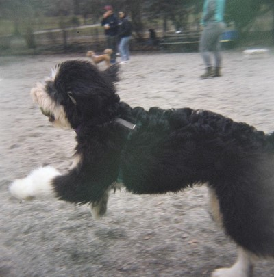

<div class="row">
<div class="column"></div>
<h4> About Me </h4>
<br>
<div class="column">
Hello! I'm Anika, a first-year student at Harvard College planning on studying Physics and Earth & Planetary Science. Fun fact: the above photo is not in fact of me but rather of my dog Moose who replaced me when I went to college.
</div>
</div>